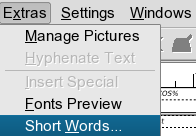
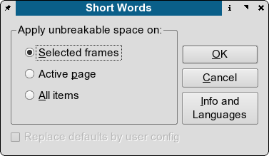

Short Words for Scribus is a special plug-in for adding non-breaking spaces before or after, so called, short words.
These short words are specific to every language's typography rules, e.g. according to Czech, Polish, and Slovak typographical standards it is not allowed to leave one letter conjunctions at line ends, if the line contains more than 25 signs. A common issue are measure and weight units, where for obvious reasons non-breaking spaces should be put in-between the preceding numbers and the units. Last but not least, there are plenty of abbreviated academic degrees, military ranks etc, which should not be separated from their owners.
Although Scribus team cannot individually address every one of these national standards, one of the Scribus core team developers, Petr Vaněk, decided to provide Scribus users with a plug-in, that can be easily customized to meet their specific needs.
The screen shot below shows a sample text containing a short word before applying non-breaking spaces.
Text sample before executing Short Words
|
The same text after applying non-breaking spaces. The red encircled word Mr jumped to the next line, because the normal space between Mr and Justice has been replaced by a non-breaking space.
Text sample after executing Short Words
 |
If you successfully installed the plug-in, go to the Extras menu and choose the Short Words... option:
Calling Short Words for Scribus
|  |
Short Words dialog window
|  |
Short Words for Scribus provides a system wide configuration file scribus-short-words.rc, which is usually located in the $prefix/lib/scribus/plugins directory (the actual directory depends on where you or your distribution installed Scribus). This configuration file is self explanatory, basically it contains a list of short words for a given language, preceded or followed by a space and separated by commas. The position of the space, before or after a short word, indicates to the plug-in, where the non-breaking space should be put. Every line with configuration settings has to start with the language it is meant for, e.g. en for English or cs for Czech:
# English stuff START here en=Dr. ,Dr ,Mr. ,Mr ,Mrs. ,Mrs ,Ms. ,Ms ,Prof. ,Prof ,Rev. ,Rev , en= Kg, kg, g, mg, oz, lb, cwt, km, Km, m, cm, mm, # Czech short words START here ## hanging conjunctions cs=K ,k ,S ,s ,V ,v ,Z ,z ,O ,o ,U ,u ,I ,i ,A , ## physics and math cs= kg, g, m, cm, mm, l, hl, s, %,
If you want to use self defined short words, e.g. for a new language, create your own configuration file with your own short words, and save the file as scribus-short-words.rc in the ~/.scribus directory. You can choose the plugin appends your configuration into the system one or just to replace and use it only itself.
The author is eager to extend the global configuration file to meet your needs, let him know about the short words and standards specific to your language.
Short Words for Scribus Copyright 2003, 2004 Petr Vaněk, <petr@yarpen.cz>
This program is free software; you can redistribute it and/or modify it under the terms of the GNU General Public License as published by the Free Software Foundation; either version 2 of the License, or (at your option) any later version.
This program is distributed in the hope that it will be useful, but WITHOUT ANY WARRANTY; without even the implied warranty of MERCHANTABILITY or FITNESS FOR A PARTICULAR PURPOSE. See the GNU General Public License for more details.
You should have received a copy of the GNU General Public License along with this program; if not, write to the Free Software Foundation, Inc., 675 Mass Ave, Cambridge, MA 02139, USA.
Document Copyright © 2004 Petr Vaněk, Maciej Hanski, under the opencontent.org license included with these documents with Elected Option IV